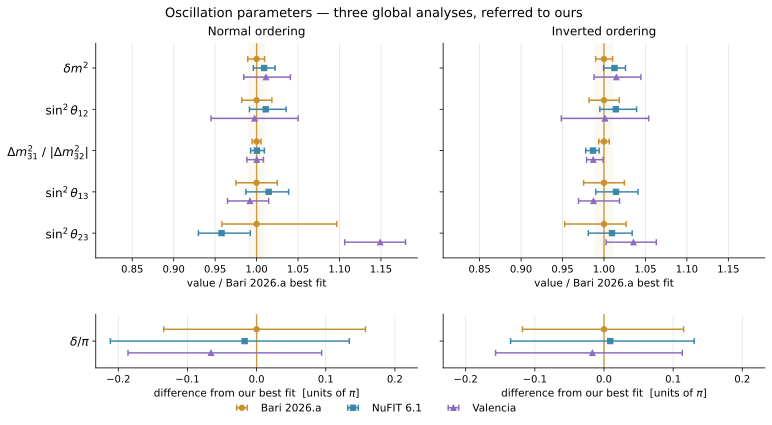

Neutrino oscillation parameters
Bari Group 2026.a Preliminary
Bari Release 2026.a, after the second JUNO data release. Tabulated Δχ² for the six oscillation parameters, both mass orderings, in three progressive data sets. These results are preliminary: the paper is in preparation, and the tables, the notebook and the data files will be published with it.
Earlier releases: the 2026 (1, 2)-sector update and the March 2025 full release →
Preliminary version of 2026-10-15
Contents
Everything on this page, at a glanceKey numbers
The questions the data are asked most often, answered for each data set. Every number is read from the 1D profiles, on the common scale of the two orderings (Δχ² from the overall best fit), with one degree of freedom: Nσ = √Δχ².
| Data set | Mass orderingfavoured, and by how much | θ23 octantfavoured; the other one at | Maximal mixingsin²θ23 = 1/2 disfavoured at | CP conservationdisfavoured at |
|---|---|---|---|---|
| LBL Acc + Solar + Reac + Atmos with JUNO | NO at 3.9σΔχ² = 15.34 | first (θ23 < 45°)other octant: 0.3σ (Δχ² = 0.08) | 0.3σΔχ² = 0.08 | δ = 0: 3.2σ δ = π: 1.4σΔχ² = 10.48 and 1.90 |
| LBL Acc + Solar + Reac with JUNO | NO at 2.0σΔχ² = 3.99 | first (θ23 < 45°)other octant: 0.5σ (Δχ² = 0.21) | 0.5σΔχ² = 0.21 | δ = 0: 2.7σ δ = π: 1.2σΔχ² = 7.08 and 1.46 |
| LBL Acc + Solar + LBL Reac without JUNO | IO at 1.6σΔχ² = 2.64 | first (θ23 < 45°)other octant: 0.7σ (Δχ² = 0.52) | 0.7σΔχ² = 0.52 | δ = 0: 3.1σ δ = π: 1.9σΔχ² = 9.46 and 3.58 |
Best fits and allowed ranges
The oscillation parameters of the three data sets, for either mass ordering. Every value is read from the analysis output, not transcribed.
How the quoted values are obtained. Every number comes from exact profiles of the χ²: at each node all the other parameters and all the nuisances are minimised over. The quoted best fit is the continuous minimum of the profile — the vertex of the parabola through the lowest node and its two neighbours — not the lowest node itself; the 1σ, 2σ and 3σ ranges are where the profile crosses Δχ² = 1, 4, 9, taken linearly between neighbouring nodes. The figures show the profiles as computed.
The bars share one axis: per cent of the best fit, so their length is the precision — a short bar means a well measured parameter. sin²θ₂₃ and δ sit on a wider scale, drawn dashed: they are an order of magnitude less constrained, and one is bimodal, the other cyclic. Arrowheads mean the interval continues past the edge.
LBL + Solar + Reac + Atmos (combined), favoured ordering. The three data sets in detail follow.
LBL + Solar + Reac + Atmos
combined
| Parameter | Ordering | Best fit ±1σ | 1σ range | 2σ range | 3σ range |
|---|---|---|---|---|---|
| δm² / 10⁻⁵ eV² | NO | 7.465+0.072−0.080 | 7.386 – 7.538 | 7.312 – 7.609 | 7.239 – 7.681 |
| IO | 7.439+0.077−0.075 | 7.364 – 7.516 | 7.292 – 7.589 | 7.218 – 7.662 | |
| sin²θ₁₂ | NO | 0.3047+0.0056−0.0054 | 0.2993 – 0.3104 | 0.2940 – 0.3160 | 0.2888 – 0.3217 |
| IO | 0.3036+0.0056−0.0055 | 0.2981 – 0.3092 | 0.2928 – 0.3150 | 0.2876 – 0.3208 | |
| Δm² / 10⁻³ eV² | NO | 2.4720+0.0132−0.0135 | 2.4586 – 2.4853 | 2.4454 – 2.5007 | 2.4317 – 2.5174 |
| IO | −2.4810+0.0162−0.0155 | −2.4965 – −2.4648 | −2.5134 – −2.4487 | −2.5293 – −2.4291 | |
| sin²θ₁₃ | NO | 0.0222+0.0006−0.0006 | 0.0216 – 0.0227 | 0.0211 – 0.0233 | 0.0205 – 0.0238 |
| IO | 0.0223+0.0005−0.0005 | 0.0217 – 0.0228 | 0.0212 – 0.0234 | 0.0206 – 0.0239 | |
| sin²θ₂₃ | NO | 0.4908+0.0475−0.0205 | 0.4703 – 0.5383 | 0.4557 – 0.5594 | 0.4439 – 0.5735 |
| IO | 0.5446+0.0145−0.0258 | 0.5188 – 0.5592 | 0.4546 – 0.5716 | 0.4408 – 0.5819 | |
| δ/π | NO | 1.19+0.16−0.13 | 1.05 – 1.34 | 0.92 – 1.65 | 0.79 – 1.95 |
| IO | 1.52+0.12−0.12 | 1.40 – 1.63 | 1.28 – 1.74 | 1.16 – 1.84 |
LBL Acc + Solar + LBL Reac
without JUNO
| Parameter | Ordering | Best fit ±1σ | 1σ range | 2σ range | 3σ range |
|---|---|---|---|---|---|
| δm² / 10⁻⁵ eV² | NO | 7.744+0.162−0.152 | 7.592 – 7.906 | 7.431 – 8.064 | 7.274 – 8.218 |
| IO | 7.743+0.162−0.153 | 7.590 – 7.905 | 7.429 – 8.063 | 7.273 – 8.218 | |
| sin²θ₁₂ | NO | 0.3123+0.0109−0.0110 | 0.3013 – 0.3232 | 0.2905 – 0.3346 | 0.2801 – 0.3466 |
| IO | 0.3134+0.0111−0.0111 | 0.3023 – 0.3245 | 0.2915 – 0.3360 | 0.2810 – 0.3482 | |
| Δm² / 10⁻³ eV² | NO | 2.4851+0.0275−0.0275 | 2.4576 – 2.5126 | 2.4309 – 2.5412 | 2.4052 – 2.5701 |
| IO | −2.4497+0.0274−0.0280 | −2.4778 – −2.4223 | −2.5067 – −2.3952 | −2.5358 – −2.3690 | |
| sin²θ₁₃ | NO | 0.0233+0.0030−0.0039 | 0.0194 – 0.0263 | 0.0163 – 0.0295 | 0.0142 – 0.0328 |
| IO | 0.0271+0.0029−0.0032 | 0.0239 – 0.0300 | 0.0202 – 0.0332 | 0.0180 – 0.0365 | |
| sin²θ₂₃ | NO | 0.4792+0.0721−0.0198 | 0.4594 – 0.5514 | 0.4445 – 0.5739 | 0.4318 – 0.5885 |
| IO | 0.4772+0.0629−0.0192 | 0.4580 – 0.5401 | 0.4433 – 0.5712 | 0.4306 – 0.5864 | |
| δ/π | NO | 1.14+0.16−0.14 | 1.00 – 1.30 | 0.86 – 1.73 | 0.69 – 2.11 |
| IO | 1.54+0.14−0.15 | 1.39 – 1.68 | 1.24 – 1.80 | 1.11 – 1.92 |
LBL Acc + Solar + Reac
with JUNO
| Parameter | Ordering | Best fit ±1σ | 1σ range | 2σ range | 3σ range |
|---|---|---|---|---|---|
| δm² / 10⁻⁵ eV² | NO | 7.466+0.073−0.079 | 7.387 – 7.539 | 7.314 – 7.610 | 7.240 – 7.682 |
| IO | 7.453+0.077−0.077 | 7.376 – 7.530 | 7.303 – 7.602 | 7.228 – 7.674 | |
| sin²θ₁₂ | NO | 0.3050+0.0056−0.0055 | 0.2995 – 0.3106 | 0.2942 – 0.3163 | 0.2890 – 0.3220 |
| IO | 0.3044+0.0057−0.0056 | 0.2989 – 0.3101 | 0.2935 – 0.3158 | 0.2883 – 0.3216 | |
| Δm² / 10⁻³ eV² | NO | 2.4773+0.0155−0.0142 | 2.4631 – 2.4929 | 2.4493 – 2.5108 | 2.4350 – 2.5295 |
| IO | −2.5020+0.0186−0.0179 | −2.5199 – −2.4834 | −2.5354 – −2.4660 | −2.5497 – −2.4486 | |
| sin²θ₁₃ | NO | 0.0222+0.0005−0.0006 | 0.0216 – 0.0227 | 0.0211 – 0.0233 | 0.0205 – 0.0239 |
| IO | 0.0222+0.0005−0.0005 | 0.0217 – 0.0228 | 0.0211 – 0.0233 | 0.0206 – 0.0239 | |
| sin²θ₂₃ | NO | 0.4850+0.0586−0.0206 | 0.4644 – 0.5436 | 0.4494 – 0.5677 | 0.4366 – 0.5827 |
| IO | 0.5614+0.0141−0.0176 | 0.5437 – 0.5755 | 0.4500 – 0.5873 | 0.4318 – 0.5980 | |
| δ/π | NO | 1.17+0.14−0.13 | 1.04 – 1.31 | 0.89 – 1.67 | 0.74 – 2.09 |
| IO | 1.57+0.12−0.13 | 1.43 – 1.69 | 1.29 – 1.80 | 1.16 – 1.90 |
Synopsis figures
One panel per parameter, Nσ = √(Δχ²) against the parameter, both orderings on the joint scale.


Two-dimensional planes
The five planes of the Δχ² surfaces, one figure per plane, both mass orderings overlaid. Produced by the notebook from the tables above. The one-dimensional profiles are the synopsis figures just above.
Data files
Preliminary The Δχ² tables (1D, 2D and the full 6D χ²), the tables as PDF, the notebook and the release package will be published with the paper. Until then the values on this site are preliminary and may change.
The three data sets
Named by the baseline of the reactor sector rather than by experiment, because that is what the physics depends on. The tags below are the ones the figures carry; every experiment is listed once, here.
How to read the tables
One point deserves attention before any use of these files.
offset
written in the header of every file:
offset = J_IO − J_NO (positive → NO favoured)
Dchi2_joint_NO = Dchi2_NO + max(0, −offset)
Dchi2_joint_IO = Dchi2_IO + max(0, +offset)Conventions
Nσ = √(Δχ²) with one degree of freedom, as in our papers.
The six parameters live on different grids, so the tables are in long
format: one row per node, columns parameter value unit Dchi2_NO Dchi2_IO.
All three data sets give exact profiles, in 1D and in 2D: at every
node all the other parameters and all the nuisances are minimised over
— each file states it in its header.
Notation, and how to translate it
Different global analyses use different mass-squared variables. Getting the translation wrong is the single easiest way to misread a comparison, so we state ours explicitly.
What we use
δm² = m₂² − m₁² (positive by definition)
Δm² = m₃² − (m₁² + m₂²)/2 = (Δm²₃₁ + Δm²₃₂)/2 ( > 0 in NO, < 0 in IO )Δm² is the semisum of the two atmospheric splittings, and we quote it with its sign: positive in the normal ordering, negative in the inverted one. Every IO row below therefore carries a negative Δm². A bare magnitude would not say which ordering a number belongs to, and the two best fits are different numbers with different precisions, so wherever a single value appears on this page the ordering is named beside it. Our LaTeX tables carry the same sign. Where a symbol appears between bars it is a magnitude on purpose: that is what the comparison with NuFIT and Valencia needs, since those groups quote |Δm²₃₂| and |Δm²₃₁|.
Translating to Δm²₃₁ and Δm²₃₂
Δm²₃₁ = Δm² + δm²/2 Δm²₃₂ = Δm² − δm²/2 (both orderings)
IO, on magnitudes: |Δm²₃₂| = |Δm²| + δm²/2 |Δm²₃₁| = |Δm²| − δm²/2These are exact identities. They follow from Δm²₃₁ = Δm²₃₂ + δm², which is the definition of δm² rearranged: the semisum then gives Δm² = Δm²₃₁ − δm²/2 = Δm²₃₂ + δm²/2. Because Δm² carries its sign, the first line holds in both orderings. In the inverted one Δm² and both Δm²₃ℓ are negative, so taking magnitudes exchanges the two roles and the plus sign passes to the «32».
NuFIT quotes Δm²₃₁ for NO and Δm²₃₂ for IO; the Valencia fit quotes |Δm²₃₁| for both. The comparison table below is labelled accordingly.
Propagating the error
For y = |Δm²| + δm²/2 — that is
Δm²₃₁ in NO and |Δm²₃₂| in IO
— the full Gaussian formula is
var(y) = var(Δm²) + var(δm²)/4 + cov(Δm², δm²).
The variances are those of the tables above; the correlation ρ is
measured, not assumed zero. It turns out small, and the
last column shows how little it matters — but that is a result, not
an assumption.
| Ord. | Quantity | Δm² | δm² | converted ± 1σ | ρ | effect on σ |
|---|---|---|---|---|---|---|
| NO | Δm²31 | 2.4720 | 7.47 | 2.5093 ± 0.0134 | +0.052 | +0.19% |
| IO | |Δm²32| | −2.4810 | 7.44 | 2.5182 ± 0.0159 | +0.094 | +0.25% |
Our results — final combination (with JUNO + atmospheric)
| Parameter | Ord. | best fit ± 1σ | rel. 1σ | 1σ range | 2σ range | 3σ range |
|---|---|---|---|---|---|---|
| δm² [10−5 eV²] | NO | 7.465+0.072−0.080 | 1.02% | 7.386–7.538 | 7.312–7.609 | 7.239–7.681 |
| IO | 7.439+0.077−0.075 | 1.02% | 7.364–7.516 | 7.292–7.589 | 7.218–7.662 | |
| sin²θ12 | NO | 0.3047+0.0056−0.0054 | 1.81% | 0.2993–0.3104 | 0.2940–0.3160 | 0.2888–0.3217 |
| IO | 0.3036+0.0056−0.0055 | 1.83% | 0.2981–0.3092 | 0.2928–0.3150 | 0.2876–0.3208 | |
| Δm² [10−3 eV²] | NO | 2.4720+0.0132−0.0135 | 0.54% | 2.4586–2.4853 | 2.4454–2.5007 | 2.4317–2.5174 |
| IO | −2.4810+0.0162−0.0155 | 0.64% | −2.4965 – −2.4648 | −2.5134 – −2.4487 | −2.5293 – −2.4291 | |
| sin²θ13 | NO | 0.0222+0.0006−0.0006 | 2.50% | 0.0216–0.0227 | 0.0211–0.0233 | 0.0205–0.0238 |
| IO | 0.0223+0.0005−0.0005 | 2.46% | 0.0217–0.0228 | 0.0212–0.0234 | 0.0206–0.0239 | |
| sin²θ23 | NO | 0.4908+0.0475−0.0205 | 6.93% | 0.4703–0.5383 | 0.4557–0.5594 | 0.4439–0.5735 |
| IO | 0.5446+0.0145−0.0258 | 3.71% | 0.5188–0.5592 | 0.4546–0.5716 | 0.4408–0.5819 | |
| δ/π | NO | 1.19+0.16−0.13 | 12.30% | 1.05–1.34 | 0.92–1.65 | 0.79–1.95 |
| IO | 1.52+0.12−0.12 | 7.68% | 1.40–1.63 | 1.28–1.74 | 1.16–1.84 |
The relative uncertainty uses the symmetrised 1σ error, (σ++σ−)/2. ⊕ separates disjoint allowed intervals.
Comparison with other global analyses
| Parameter | Ord. | This work | NuFIT 6.1 | Valencia |
|---|---|---|---|---|
| δm² [10−5 eV²] | NO | 7.465+0.072−0.080 7.239–7.681 | 7.53+0.10−0.10 7.24–7.82 | 7.55+0.22−0.20 6.98–8.19 |
| IO | 7.439+0.077−0.075 7.218–7.662 | 7.53+0.10−0.10 7.24–7.82 | 7.55+0.22−0.20 6.98–8.19 | |
| sin²θ12 | NO | 0.3047+0.0056−0.0054 0.2888–0.3217 | 0.3081+0.0075−0.0060 0.2893–0.3295 | 0.304+0.016−0.016 0.257–0.355 |
| IO | 0.3036+0.0056−0.0055 0.2876–0.3208 | 0.3080+0.0076−0.0059 0.2892–0.3295 | 0.304+0.016−0.016 0.257–0.355 | |
| Δm²31 / |Δm²32| [10−3] | NO | 2.5093+0.0134−0.0134 2.4691–2.5547 | 2.5102+0.0226−0.0189 2.4500–2.5764 | 2.51+0.02−0.03 2.43–2.58 |
| IO | 2.5182+0.0159−0.0159 2.4663–2.5665 | 2.4848+0.0188−0.0222 2.4211–2.5466 | 2.49+0.03−0.02 2.42–2.57 | |
| sin²θ13 | NO | 0.0222+0.0006−0.0006 0.0205–0.0238 | 0.0225+0.0005−0.0006 0.0206–0.0242 | 0.0220+0.0005−0.0006 0.0203–0.0238 |
| IO | 0.0223+0.0005−0.0005 0.0206–0.0239 | 0.0226+0.0006−0.0005 0.0209–0.0244 | 0.0220+0.0007−0.0004 0.0204–0.0238 | |
| sin²θ23 | NO | 0.4908+0.0475−0.0205 0.4439–0.5735 | 0.4701+0.0170−0.0137 0.4350–0.5844 | 0.564+0.015−0.021 0.423–0.604 |
| IO | 0.5446+0.0145−0.0258 0.4408–0.5819 | 0.5499+0.0132−0.0156 0.4391–0.5839 | 0.564+0.015−0.018 0.427–0.603 | |
| δ/π | NO | 1.19+0.16−0.13 0.79–1.95 | 1.17+0.15−0.19 0.70–2.03 | 1.12+0.16−0.12 0.76–2.00 |
| IO | 1.52+0.12−0.12 1.16–1.84 | 1.53+0.12−0.14 1.12–1.86 | 1.50+0.13−0.14 1.11–1.87 |
Upper line: best fit with 1σ errors. Lower line, in grey: the 3σ range.

- One axis for six quantities. Each observable is referred to our own best fit: the vertical line is us.
- Bars are 1σ, for every analysis.
- δCP is a difference, not a ratio: it is a phase, so its zero is a convention and a percentage would mean nothing.
- sin²θ23 in normal ordering: the offset is a choice of octant, not a tension; our 3σ range covers both octants.
- Different data, different treatments: the three analyses do not use the same data sets, nor treat them in the same way.
- So differences beyond the bars are expected, and are not by themselves discrepancies.
• NuFIT. NuFIT 6.1 (2025), www.nu-fit.org, to be cited with JHEP 12 (2024) 216 [arXiv:2410.05380]. Values derived by us from the official χ2 tables with the same procedure as our own (PCHIP on the χ2, crossings at Δχ2 = 1, 4, 9), not transcribed.
Source file: v61.release-TByes-NO.txt and
v61.release-TByes-IO.txt, the χ2 tables of the
NuFIT 6.1 analysis including the tabulated Super-Kamiokande and
IceCube atmospheric data, like our data set c (NuFIT also distributes the
analysis without them).
• Valencia. M. Tórtola, Global fits to neutrino oscillation parameters, Neutrino 2024, Milano, slide 12 («Valencia Global Fit, Pre-Nu2024», SSM HZ MB22m, with SK atmospheric). zenodo.org/records/12704823
Converted for IO. Valencia quotes |Δm²31| in both orderings, while we and NuFIT quote |Δm²32| for IO — a difference of δm², three times the error. Their IO entry is therefore shown converted, |Δm²32| = |Δm²31| + δm², with the errors combined assuming independence: their covariance is not published. The NO entry needs no conversion.
• The three analyses do not use identical data sets, nor identical treatments of the same data. Differences exceeding the quoted errors are expected and are not evidence of a discrepancy. Read the table as a comparison of published results, each with its own source stated above, not as a consistency test.
What’s new, and how to cite
New data in release 2026.a, with respect to our previous analysis:
- The second JUNO data release, 207 days, from the collaboration’s paper arXiv:2609.37895: the measured spectrum, with the backgrounds and the statistical treatment of the paper.
- Reactor antineutrinos in Super-Kamiokande with gadolinium (phases SK-VI and SK-VII, 411.52 live days), from the collaboration’s paper “First observation of electron antineutrinos from nuclear reactors at Super-Kamiokande” (arXiv:2610.03143), reproduced by the group and added to the long-baseline reactors of all three data sets.
- The new T2K oscillation results, appearance and disappearance, presented by S. King for the T2K Collaboration, “Recent results and perspectives from the T2K experiment”, Neutrino 2026, 4 June 2026.
- Atmospheric neutrinos in KM3NeT/ORCA6, 433 kton-years, from the collaboration’s open data release (KM3NeT Collaboration, JHEP 10 (2024) 206, arXiv:2408.07015).
How to cite
Please cite the paper that accompanies this release; its reference will appear here. To point to these tables themselves, cite the release with its version:
@misc{BariGroup2026a,
author = {{Bari Group}},
title = {Global analysis of neutrino oscillation data, release 2026.a},
year = {2026},
note = {Preliminary version of 2026-10-15},
howpublished = {\url{https://global-nu.org/results.html}}
}Questions, problems with a file, requests: antonio.marrone@ba.infn.it.